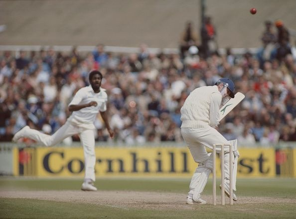
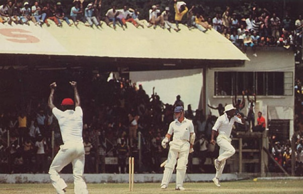

The over of the century
-March 5, 2023
It was the West Indies, the Invincibles at the peak of their powers, having reached the epitome of success. This was the same England, that ignited this rampage in 1976. The fire hadn’t died yet, burning brighter than ever.
In came Michael Holding, the West Indian thunderbolt with throbbing veins, raging for the first blood.
In front of him, was Geoffrey Boycott, notorious for tiring the best of bowlers with a defense as sound as anyone in the history of cricket. It wasn’t going to be easy.
He swiveled through his buttery action, as a vicious snake.
And the very first ball, caught the edge. Boycott had no idea where the ball was. It felt just short of second slip. The shivers and quivers were already felt in the English dressing room.
The man was in the mood.

And the second ball, even more penetrative, putting arguably the most technically sound batter in cricket history in an awkward position. The ball went racing past his hips, and even Dujon felt the impact is his gloves. Oohs and aahs at the slips.
Every ball felt like forever for Geoffrey Boycott.
The next ball, Holding goes a bit fuller and his thunderbolt strikes Boycott in the thighs. He couldn’t put bat on ball at all. Holding was unplayable.
The crowd was pumped. This was pace bowling at its best.

The fourth one, probably the worst one of the over, yet the fastest. Holding goes short this time as a surprise, and Boycott manages to negotiate it, as he guides it to gully. Once again, not a fully committed shot. But the question was of survival when you have Michael Holding steaming in.
It was a near-achievement that someone could even last those 4 balls, deadlier than anything bowled in cricket history.
Holding pitches it up, as the stumps flew away to Boycott’s agony.
The crescendo had been reached. 5 Balls of the setup leading to the ultimate kill. It was an over of untrammeled notion of immaculate pace bowling. The adrenaline rush was visible among the West Indians. Michael Holding, with the savage look on his face, smiled. He knew that he had earned every inch of it.
Not the fastest, not the fiercest, as Michael Holding accepted himself. But the greatest.